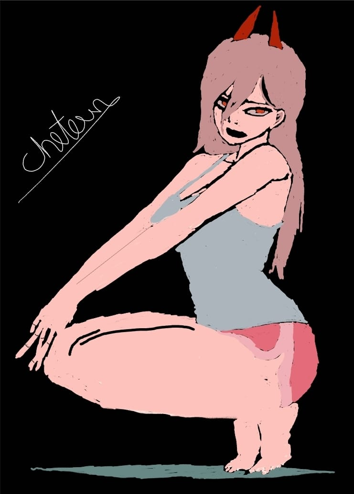

Power
The Blood Fiend and a Public Safety Devil Hunter in Makima's squad. Power looks like a young girl with long hair; as a Fiend, she has short red horns protruding from her head (like a typical fiend). Power loves violence and is childish, greedy, almost entirely self-motivated, and willing to harm others for her own satisfaction. However, Power is shown to have an unconditional love for her cat, Meowy (ニャーコ, Nyāko), even at one point willing to sacrifice Denji's life to save it. She comes to care deeply for Denji and Aki, her first true friends.
When she, Denji, Aki, and a group of Devil Hunters were teleported to Hell, Power got PTSD afterwards from the resulting encounter with the Darkness Devil. Denji helps her recover, but Aki, possessed by the Gun Devil, attacks them. In the ensuing battle, Denji kills Aki, devastating both him and Power. Later, Power was shot by Makima in front of Denji, to break his spirit. Power revives as the Blood Devil from Denji's blood at Pochita's request to save Denji, but is fatally wounded by Makima again. Before dying, Power makes a contract with Denji - in exchange for her blood, Denji has to find the reborn Blood Devil and turn her back into Power so they may be friends again.[5]
Outside the Chainsaw Man manga and anime adaptation, Power has appeared in the spin-off light novel Buddy Stories. In a chapter, Power and Denji investigate a recent slate of disappearances at an inn.